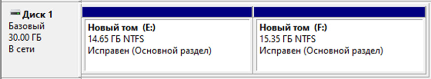

Выбор файловой системы и разметки жесткого диска
Файловая система (ФС) — это способ организации, хранения и управления данными на носителе информации (жестком диске, SSD, флеш-накопителе). Она определяет, как файлы хранятся, индексируются, читаются и записываются, а также какие атрибуты и разрешения можно задать для каждого файла. Файловая система является ключевым компонентом взаимодействия пользователя и операционной системы с физическим хранилищем данных.
В рамках системного программного обеспечения выбор файловой системы влияет на производительность, надёжность хранения, совместимость с ОС и возможности по восстановлению данных.
Выбор файловой системы для Windows 10
В связи с тем, что в рамках курсовой работы используется Windows 10 Домашняя, наиболее логичным и оптимальным выбором является NTFS. Эта файловая система:
- полностью поддерживается выбранной ОС;
- надёжна при работе с большими объёмами данных;
- позволяет устанавливать права доступа и защищать файлы;
- совместима с современными утилитами резервного копирования и восстановления.
Также стоит отметить, что NTFS используется по умолчанию при установке Windows и не требует дополнительных действий по форматированию, что упрощает настройку системы для начинающих пользователей.
Сравнение файловых систем
| Характеристика | NTFS | FAT32 | exFAT |
|---|---|---|---|
| Макс. размер файла | 16 ТБ | 4 ГБ | 16 ЭБ |
| Шифрование | EFS, BitLocker | Нет | Нет |
| Разрешения файлов | Да | Нет | Нет |
| Совместимость | Windows | Все ОС | Windows, macOS |
Разметка накопителя
Разметка накопителя — это процесс деления физического диска на логические разделы, каждый из которых может использоваться отдельно.
Для данной курсовой работы предлагается следующая схема разметки жёсткого диска:
